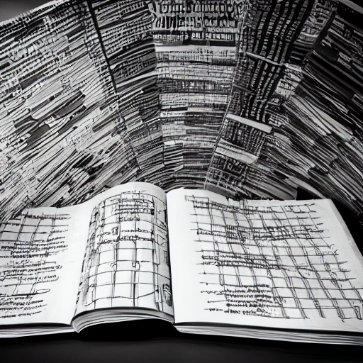

Literature notes should be kept separate
For a while I thought that literature notes were useful for two reasons:
- We can refer to the book's contents with others;
- A book allows to jump from one idea to another, it would add links between concepts
What made me question this is visualizing my notes as a graph.
- Links should be between ideas that we formulated ourselves. The links are as much part of our second brain as the notes' contents. We should not let anyone's thought process and orgranization interfer with ours. We can create links between ideas we extract from ths book and reference this book on boh notes, but not link to the literature note.
This now How I take reading notes.

If the main motivation is to share a book review, then this is a project. Because Projects are what we write for others, and Book reviews are not literature notes